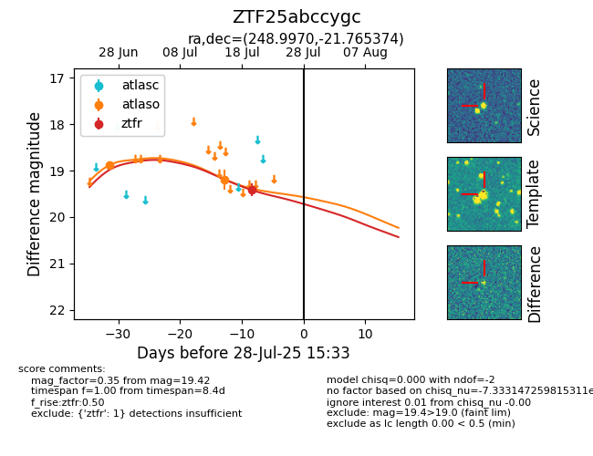

Target ZTF25abccygc at 2025-07-28 15:33, see:
FINK: fink-portal.org/ZTF25abccygc
Lasair: lasair-ztf.lsst.ac.uk/objects/ZTF25abccygc
ALeRCE: alerce.online/object/ZTF25abccygc
alt names
ZTF25abccygc (ztf,fink)
coordinates:
equatorial (ra, dec) = (248.9970,-21.76537)
galactic (l, b) = (356.6567,+16.94584)
photometry
last atlaso=19.19, ztfr=19.42
2 atlaso, 1 ztfr detections
